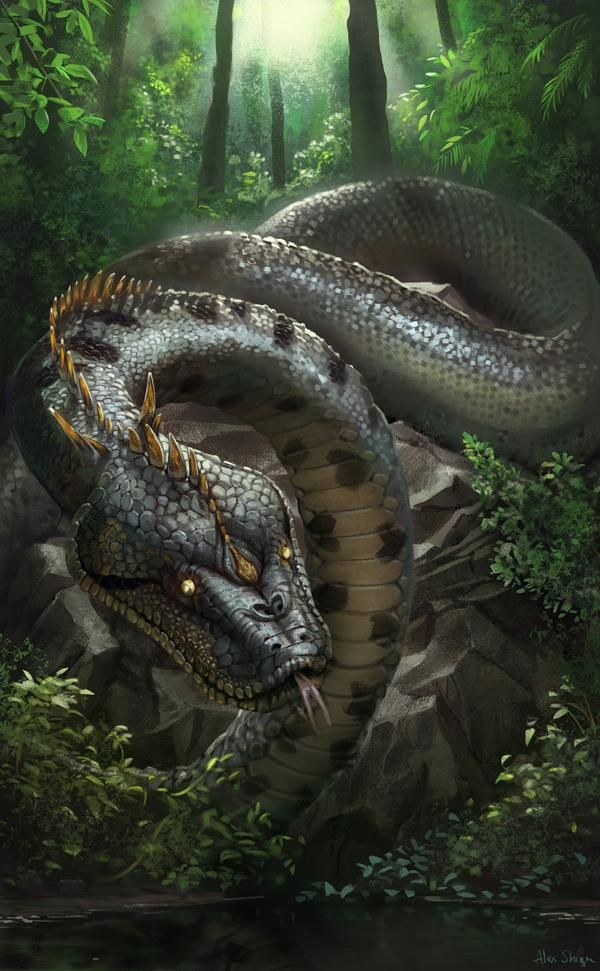
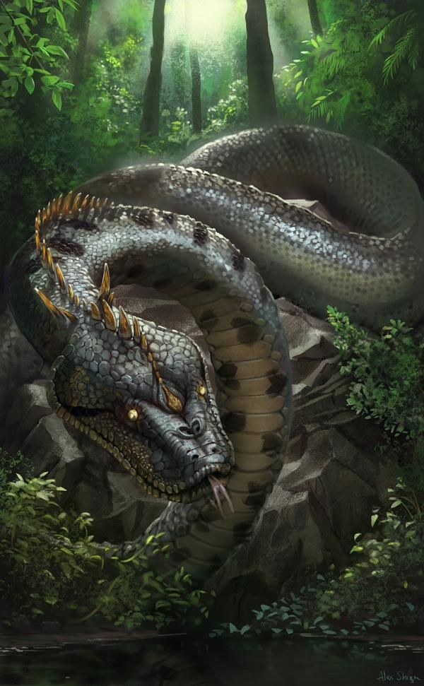

Tipos de narraciones
de la Selva
Las narraciones de la selva son un tipo de narrativa que se centra en la vida y las experiencias de los animales y seres que habitan en los densos bosques tropicales. Estas historias suelen estar llenas de aventuras, peligros, intriga y lecciones morales. A continuación te presentaré una breve introducción sobre algunos de los principales tipos de narraciones de la selva
Mitos
Los mitos son narraciones tradicionales que forman parte de la cultura de una comunidad. Estos relatos simbólicos explican aspectos fundamentales de la vida humana, como el origen del mundo, los fenómenos naturales y las creencias religiosas. Transmitidos oralmente, los mitos pueden variar entre diferentes culturas y tiempos, pero comparten la función de proporcionar sentido y significado al mundo y a nuestras experiencias. A través de la intervención de seres divinos o sobrenaturales, los mitos transmiten conocimientos, valores y normas sociales, ayudando a construir la identidad y el sentido de pertenencia de una comunidad.
Leyendas
Las leyendas son relatos populares transmitidos oralmente o por escrito que combinan elementos reales y ficticios. A diferencia de los mitos, las leyendas suelen estar basadas en hechos históricos o en personajes reales, pero a lo largo del tiempo se han enriquecido con elementos fantásticos o exagerados. Estas narraciones a menudo tienen un trasfondo cultural o regional y buscan entretener, educar o transmitir valores. Las leyendas suelen tener un protagonista o héroe, y a través de sus hazañas o aventuras se transmiten enseñanzas morales o se explican fenómenos inexplicables. Las leyendas, al igual que los mitos, forman parte importante de la tradición oral y escrita de una comunidad y ayudan a construir su identidad cultural.
Cuentos
Los cuentos son relatos breves y ficticios que tienen como objetivo entretener, enseñar o transmitir valores. A diferencia de los mitos y las leyendas, los cuentos suelen ser creaciones literarias y no están necesariamente ligados a una tradición cultural o histórica específica. Estas historias pueden presentar personajes fantásticos, situaciones extraordinarias o simplemente reflejar aspectos de la vida cotidiana. Los cuentos suelen tener una estructura narrativa con inicio, desarrollo y desenlace, y a menudo contienen una moraleja o mensaje implícito. A lo largo de la historia, los cuentos han sido utilizados como una forma de expresión artística y han sido transmitidos de generación en generación, adaptándose a diferentes culturas y contextos.
Ejemplos


Relatos Populares
La Yacumama
La Yacumama es una leyenda de la selva amazónica que ha sido transmitida de generación
en
generación por las comunidades indígenas de la región. Según la leyenda, la Yacumama es
una serpiente gigante y poderosa que habita en las profundidades de los ríos y lagos de
la selva.
¿Cuál es su tamaño?
Se dice que la Yacumama tiene un cuerpo extremadamente largo y ancho, cubierto de
escamas brillantes y resbaladizas que reflejan los colores del arcoíris. Su tamaño es
tan inmenso que puede llegar a medir más de cien metros de largo, lo que la convierte en
una de las serpientes más grandes del mundo.
¿Tiene poderes sobrenaturales?
La Yacumama posee un poder místico y es considerada una deidad de la naturaleza. Se cree
que tiene el control sobre las aguas y puede provocar inundaciones o sequías dependiendo
de su estado de ánimo. También se le atribuyen poderes curativos y la capacidad de
otorgar bendiciones a aquellos que la respetan y la honran.
¿Qué más se sabe?
Se dice que la Yacumama tiene una voz hipnótica y melodiosa que utiliza para atraer a
sus presas. Cuando se siente amenazada, puede emitir un fuerte rugido que hace temblar
la tierra y asusta a cualquier criatura que se encuentre cerca. Muchos cazadores y
pescadores han afirmado haber visto a la Yacumama en la selva, pero siempre ha sido una
criatura esquiva y difícil de encontrar.
La leyenda de la Yacumama es una parte importante de la cultura amazónica y sirve como
una forma de transmitir el respeto y la conexión con la naturaleza. A través de esta
historia, se enfatiza la importancia de proteger y preservar el medio ambiente, ya que
se cree que la Yacumama castiga a aquellos que dañan la selva y los ríos. Aunque la
Yacumama sigue siendo una criatura de la mitología y la tradición oral, su leyenda
continúa cautivando a las personas y recordándoles la belleza y el misterio de la selva
amazónica.
El Tunche
El Tunche es una leyenda popular en la selva amazónica que ha sido transmitida de
generación en generación por las comunidades indígenas y campesinas de la región. Se
trata de un ser misterioso y temido que habita en los bosques profundos y oscuros de la
selva.
¿Cuál es su naturaleza?
El Tunche se describe como un espíritu maligno que acecha a aquellos que se aventuran en
la selva sin respeto o precaución. Se cree que es el alma de un cazador o leñador que
murió en la selva y fue castigado por su comportamiento irresponsable.
¿Qué aspecto tiene?
El Tunche se representa como una sombra oscura y sin forma definida, capaz de
transformarse en diferentes criaturas o emitir sonidos aterradores. Muchos cuentan que
emite silbidos, risas o lamentos escalofriantes para asustar a los viajeros
desprevenidos.
¿Cómo actúa?
Se cree que el Tunche es capaz de hechizar a sus víctimas, llevándolas a la locura o
haciendo que se pierdan en el espeso follaje de la selva. También se dice que puede
lanzar maleficios o enfermedades a aquellos que se cruzan en su camino.
La leyenda del Tunche es una advertencia sobre el respeto y la precaución necesarios al
adentrarse en la selva amazónica. Sirve como recordatorio de la importancia de conocer y
respetar el entorno natural, así como de ser conscientes de los peligros y desafíos que
pueden encontrarse en la selva. Aunque el Tunche sigue siendo una figura de mitología y
folklore, su leyenda perdura en la imaginación de las personas, recordándoles la
importancia de mantener un equilibrio y armonía con la naturaleza.
Testimonios
 

Lucas Mamani tiene actualmente 60 años. Actualmente, se dedica al turismo como guía del lago Yacumama, en Madre de Dios, lejos de su antiguo trabajo: la agricultura. No obstante, recuerda como si hubiese sido ayer el día que confrontó a una yacumama. El hecho ocurrió hace más de 30 años, cuando solo contaba con una delgada tabla para cruzar de una orilla a otra el lago que estaba frente de donde vivía. Lucas retornaba de una ardua jornada en la chacra cuando una anaconda de grandes proporciones saltó del agua para enroscarse en su pierna. "Entonces, sobre ese puente estaba pasando y en eso salió, me envolvió la pierna y me estaba presionando, y como era un solo palito, no había de dónde sujetarme, ya me estaba jalando", recordó Mamani. Lucas Mamani se encontró a punto de perder completamente el equilibrio sobre aquella delgada madera que lo separaba del agua, pero su esposa, quien se encontraba con un machete, reaccionó y golpeó con la herramienta al animal. Para mi buena suerte, mi esposa estaba atrás y le dio un golpe con un machete que tiene filo y, como le ha hecho herida, se desenvolvió y otra vez al agua", indicó Lucas. A día de hoy, Lucas Mamani reflexiona que, aunque el suceso parece salido de una película, fue real. Asimismo, comenta que ese ha sido el momento más cercano que ha tenido con una yacumama.
Él salió de su carpa a las dos de la mañana, como lo venía haciendo todas las noches. Revisar en la madrugada los registros de los instrumentos dejados a lo largo de la trocha era su rutina de la investigación que conducía. Munido de una linterna poderosa comenzó el recorrido. Pero apenas dejó el área del campamento sintió un extraño malestar. Su linterna mostraba claramente la ancha trocha que él conocía bien y, aunque a veces recorriéndola sintió ruido de animales nocturnos, nunca le causaron miedo. A medida que avanzaba por la trocha su incomodidad aumentaba. Alumbró varias veces hacía atrás y a los lados pero no vio nada. Sintió, sí, el canto, más bien silbido, de un ave que ya había escuchado otras veces, pero no le dio importancia. La sensación de ser seguido y su preocupación fueron aumentando tanto que, francamente preocupado, decidió detenerse. Apoyó la espalda contra el tronco de un árbol e iluminó cuidadosamente la trocha por la que venía, como para enfrentar al seguidor misterioso. Y ocurrió. Vio algo como una sombra que se le vino encima y que, literalmente, lo atravesó causándole una intensa sensación de frío. El pánico lo dominó y regresó corriendo al campamento. Al contarle a su compañero, este visiblemente espantado, le dijo que se había encontrado con el tunche y que era un puro milagro que aún estuviera vivo.